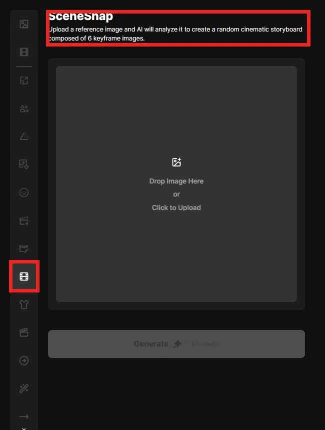
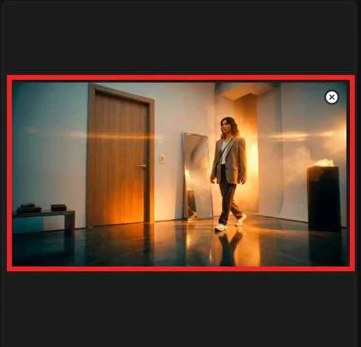
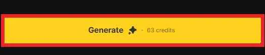
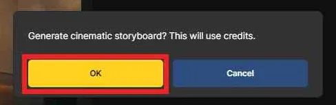
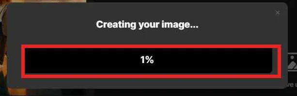
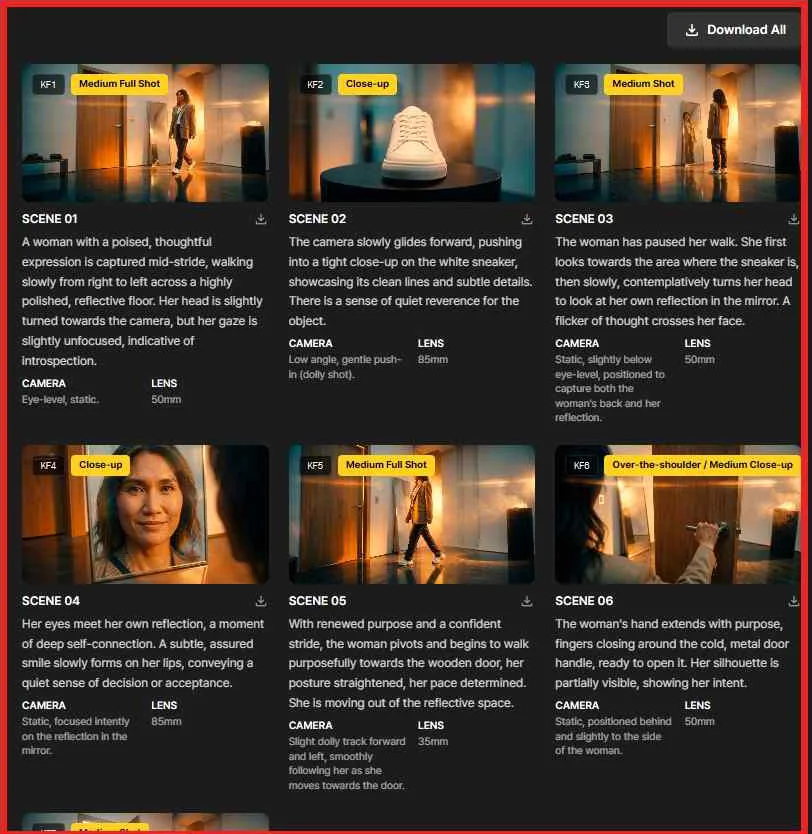
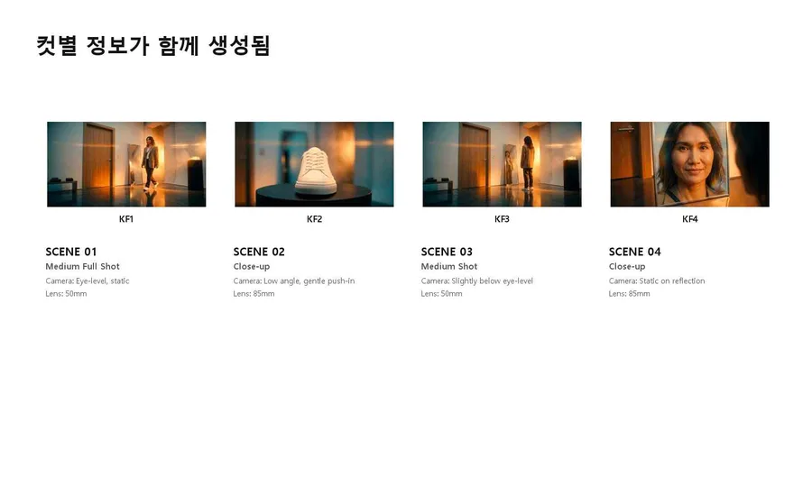
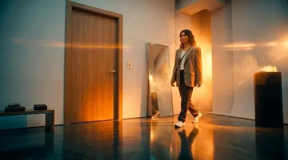
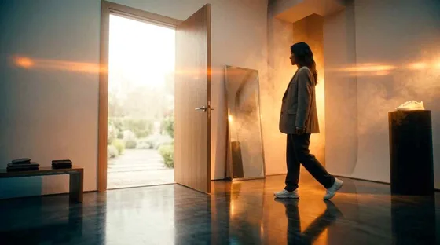

1枚のリファレンス画像を AI が解析し、シネマティックなストーリーボードへ展開します。各カットはキーフレームカードとして生成され、画像とともにシーン説明・カメラ・レンズ情報が含まれます。
1枚の画像からオープニング・ディテール・感情・クロージングのカットを提案してほしいときに使います。カメラとレンズ情報も併せて必要なディレクションミーティングの資料としても有効です。
1枚のムードフレームを動画コンティの流れへ素早く展開したいとき。
シーンの流れを先に示す必要がある広告、ブランドフィルム、ショートフォーム、プリビズに。
カメラとレンズ情報を添えたオープニング・ディテール・感情・クロージングのカットが、会議資料として必要なとき。
左サイドバーの SceneSnap アイコンをクリックして開始し、ドロップまたはクリックでリファレンス画像をアップロードします。
左の縦バーで、フィルムフレーム型の SceneSnap アイコンをクリックします。クリックするとリファレンスのアップロード画面に移動します。
Drop Image Here または Click to Upload で、解析するシーン画像をアップロードします。空間・被写体・ライティング・オブジェクトがはっきり見えるほど、結果はより具体的になります。

空間・被写体・ライティング・オブジェクトがはっきり見えるほど、豊かなシーンの流れを組み立てられます。
ストーリーへ展開する情報を持つ画像が最適です。被写体の位置、動かせる空間、視線を引くオブジェクトが見えていると、シーンの流れを組み立てやすくなります。
アップロードした画像はプレビューとして表示されます。空間・被写体・ライティング・オブジェクトがはっきりしているほど、シーンの提案が正確になります。

アップロード後に Generate を押し、クレジット使用の確認ポップアップと進行率で生成状況を確認します。
画像をアップロードすると、 Generate ボタンが有効になります。SceneSnap は1回の生成に 63 クレジット を使用します。

「 Generate cinematic storyboard? This will use credits. 」というメッセージが表示されます。 OK で生成を開始、 Cancel で閉じます。

Creating your image… とともに進行率が表示されます。処理中は一部のカードが先に現れ、完了に近づくにつれてキーフレームが埋まっていきます。

キーフレームカードは右の結果パネルに KF 番号順で並びます。各カードには KF 番号、ショットラベル、SCENE 番号、シーン説明が含まれます。

KF 番号、ショットラベル、シーン説明に加えて、カードごとにカメラとレンズの値が生成され、演出の参考としてすぐ使えます。
各カードには KF 番号、ショットラベル、SCENE 番号、シーン説明が含まれます。カットの役割をすぐに確認できます — Medium Full Shot, Close-up、など。
CAMERA には Eye-level、Static、Dolly shot などの撮影情報が表示され、 LENS では 35mm、50mm、85mm などのレンズ値が提案されます。

Download All や個別ダウンロードで結果を保存し、コンティの下書きとして扱いながら方向性を磨きます。
右上の Download All ボタンを押すと、生成されたすべての結果を一度にダウンロードできます。共有フォルダを作ったり、コンティ全体をまとめて保存するのに便利です。
各キーフレームカードにもダウンロードアイコンがあります。良いカットだけを選んで、コンティ資料やリファレンスボードに貼り付けましょう。
同じリファレンスから、役割の異なるカット（オープニング・オブジェクトのディテール・感情のクローズアップ・クロージング）が自動で提案されます。

